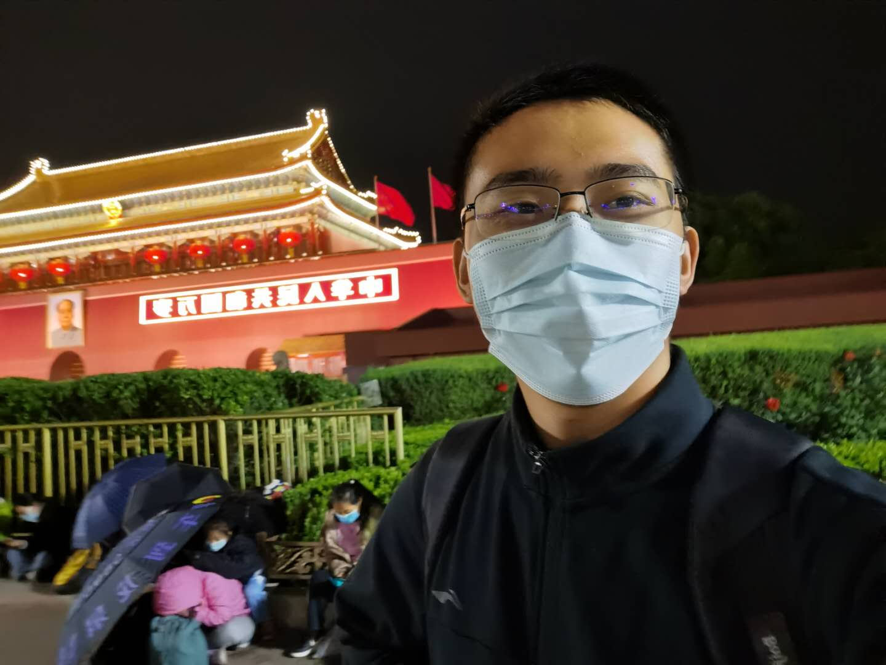
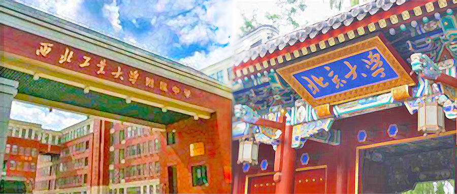

基本信息
| 姓名 | 出生日期 | 性别 |
| 米景璇 | 2002.09.05 | 男 |
| 籍贯 | 现住址 | 兴趣爱好 |
| 陕西省铜川市 | 北京市海淀区 | 乒乓球，羽毛球，看书 |
教育经过
| 年份 | 2008~2014 | 2014~2017 | 2017~2020 | 2020~ |
| 学校 | 铜川新区文家明德小学 | 铜川阳光中学 | 西北工业大学附属中学 | 北京大学药学院 |
在小学、初中时能保持前列。在西工大附中的三年，我从一个年级排名500多名的学生变成了一个前50名的学生，三年中一直在努力学习高考知识，最终也有幸进入北大学习；但从未涉及竞赛方面的学习，也没有报考各种学科竞赛和高效举办的学科营和综合营，在知识拓展的方面很是欠缺。目前学习状况虽然较为吃力，但在各种资料的帮助下，也能跟进进度。
来到大学后，逐渐自己打理生活，高中时的住宿经历使得自己这方面的适应性较强，遇到的困难也大多能够解决；现在在大学中不只是学习要自己关注，还有其他各种事情需要注意，生活变得忙碌也更加充实。
在小学初中阶段能保持爱好，经常读读书、打打球，步入高中后，逐渐失去了这些时间，只有在寒暑假才能干这些事，使得自己在这些方面较为生疏。大学提供了这样的机会和资源，发展兴趣爱好也成了一门必修课，需要平衡时间精力，不能顾此失彼。现在经常打打球，也能够如愿的去轻松的上体育课。